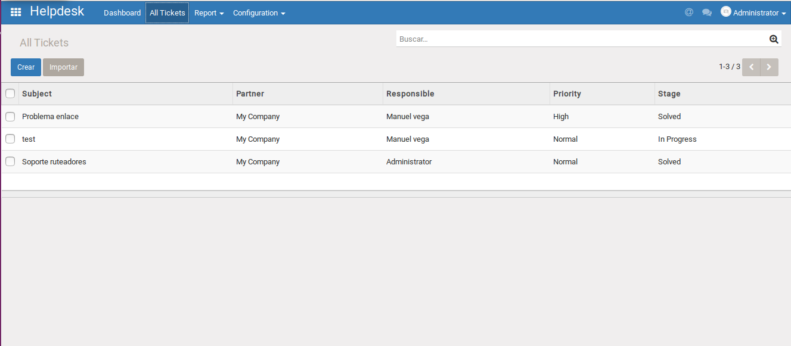

<section class="oe_container">
    <div class="oe_row oe_spaced">
        <h2 class="oe_slogan" style="color:#875A7B;">Manexware technical_inspection</h2>
        <h3 class="oe_slogan">Like records and processing of claims, technical_inspection and Support are good tools
to trace your interventions. This menu is more adapted to oral communication,
which is not necessarily related to a claim. Select a customer, add notes
and categorize your interventions with a channel and a priority level.</h3>
        <div class="oe_demo oe_picture  oe_screenshot">
            
        </div>
		<div>
    </div>
</section>

<section class="oe_container oe_separator">
</section>

<section class="oe_container oe_dark">
    <div class="oe_row">
        <div class="oe_span12 oe_centeralign">
            <br/>
            <h3>Help & Support</h3>
            <br/>
                Website: <a href="https://www.manexware.com" target="_blank">Manexware S.A.</a><br/>
                Contact: <a href="mailto:manuel.vega@manexware.com" subject="Material/United Backend Theme v10">Email Support</a><br/>
            <br/>
        </div>
    </div>
</section>
